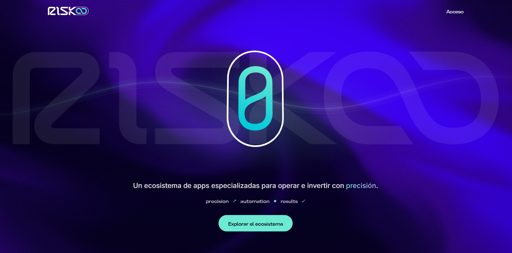
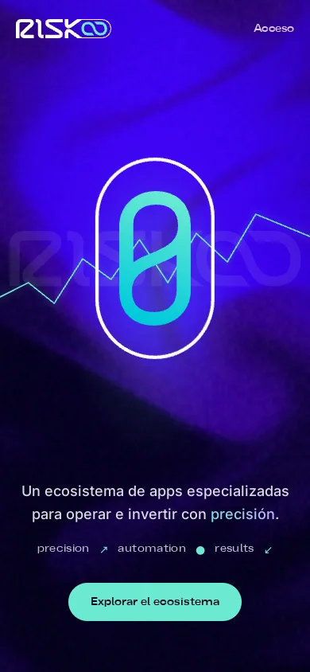

Producto, automatización e IA · caso principal
Risko: un ecosistema de apps especializadas para trading e inversión
Diseñé, construí y opero un ecosistema completo: cuatro apps que cubren cada paso de la operación, con una marca, un sistema de íconos, una landing y una infraestructura comunes.
- El problema
- Quien opera en los mercados trabaja con herramientas sueltas: una calculadora en un sitio, alertas en otro, reportes en una hoja de cálculo y la gestión del riesgo en la cabeza. Nada conversa con nada.
- Lo que construí
- Lot Size calcula el riesgo de cada operación. Safer protege las operaciones abiertas con stops automáticos y se vende con login, licencias y pago con billeteras Web3. Vector analiza resultados de backtesting de MT5 con métricas de nivel institucional. Logicore automatiza la inversión en cripto, futuros y forex con un motor de backtesting propio. Las une una landing de producto (risko.app), un sistema de marca e íconos (system.risko.app) y un servidor 24/7 con n8n, PostgreSQL y 10 terminales de MT5.
- Por qué importa
- Es producto de punta a punta: estrategia, diseño, desarrollo asistido por IA, pagos, infraestructura y operación continua, en un dominio donde un error cuesta dinero real.
- Next.js
- React
- Python
- PostgreSQL
- n8n
- MQL5
- Web3
- Coolify
- 3 apps públicas en línea y Logicore con acceso privado, unidas en risko.app
- 2.536 variantes de estrategias evaluadas con 189 pruebas automatizadas
- Login, licencias y pago con billeteras Web3 verificado on-chain
- Sistema de marca e íconos propio en system.risko.app

